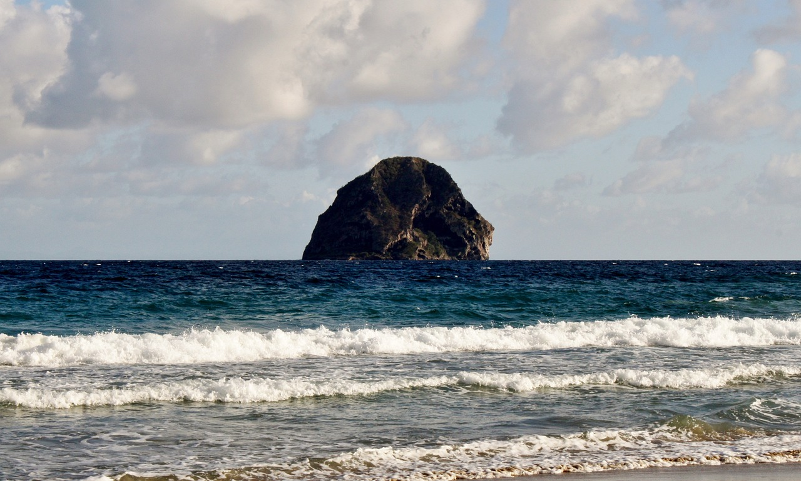
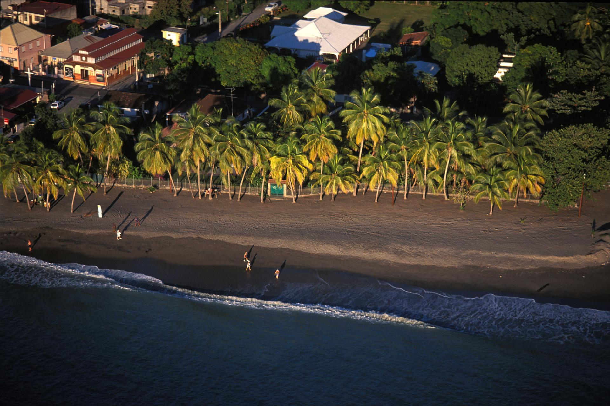
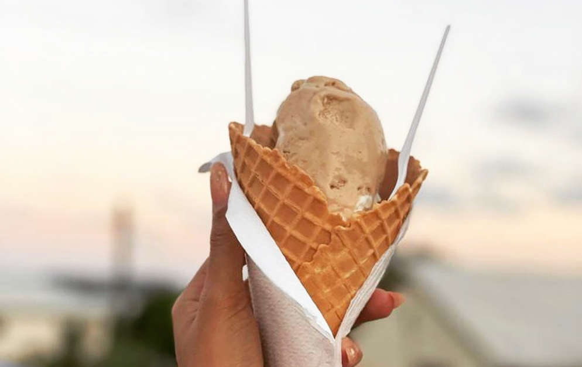
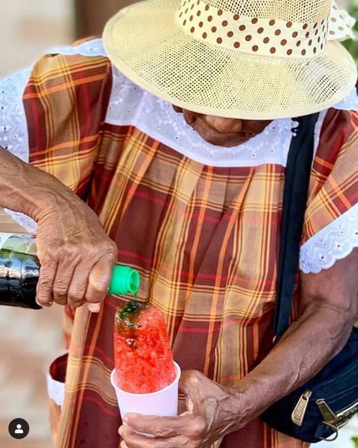

Nous vous offrons une découverte de la Martinique à travers
notre magnifique galerie photos, proposé par
Office du Tourisme Martinique
La plage Anse d'Arlet posséde un magnifique sable
blanc et l'apparition de sublimes
tortues et poissons

La plage du Diamant posséde de sublimes cocotier
penchés et le rocher du Diamant un
véritable décor de carte postale

La plage du Carbet, l'une des plages de sable noir
de l'île. Parfaite pour votre plus belle photo ou une demande en mariage Les accras de morue sont déguster en apperitifs,
entrées ou même dans des sandwichs en
Martinique, ce sont des petites fritures très apprécié

La glace cacahuète, un parfum très apprécié des
martiniquais et parfaite pour vos fins
de soirée

Le Sinobol est dessert très prisé des
martiniquais, fais de glace pilé et de sirop,
c'est un régale